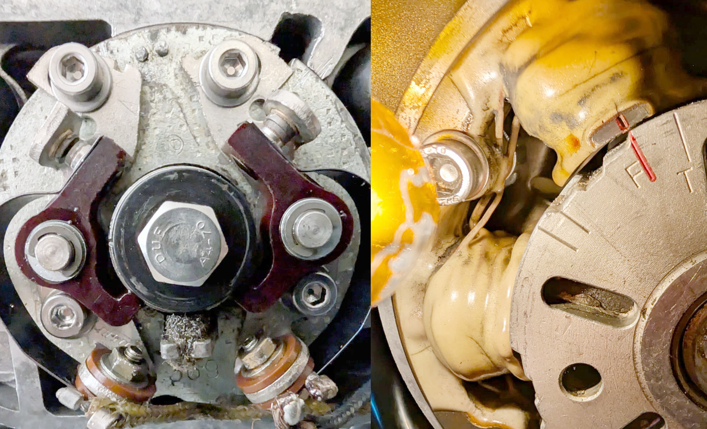

Project · Honda
CB250G · 1976
The restoration of my Honda CB250G – from a collection of parts back onto the road, in Hawaiian Blue Metallic.
Photo gallery
Project status
The first photograph is a colour and style reference for the finished motorcycle. The remaining photographs show the parts of my Honda.


